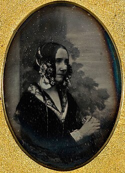

Grandes Personajes de la Computación
Ada Lovelace
Aproximadamente un siglo antes de que Konrad Zuse diseñara la primera máquina de computación programable, en la década de 1840, Ada Lovelace escribió el primer programa de computadora del mundo . Desde una perspectiva moderna, su obra es visionaria. Durante su vida, sus contribuciones científicas apenas atrajeron atención.
Imágenes relacionadas:
